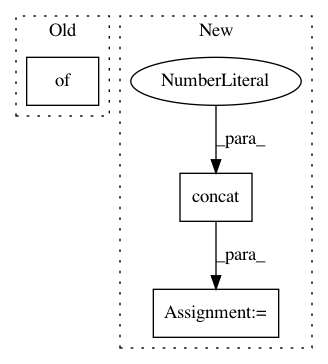

f4f853044babbcaea98da946b106fcf84e8ef79b,numerox/report.py,,big_staker,#Any#Any#,231
Before Change
df["above_cutoff"] = df["pool"] / df["s"]
df = df.drop("pool", axis=1)
df = df.sort_values(["s", "above_cutoff"], ascending=[False, False])
df = df.rename({"s": "sum"}, axis=1)
if ntop < 0:
df = df[ntop:]
else:
After Change
df_med = gb["s"].median()
df_max = df_max.rename("max")
df_med = df_med.rename("median")
df = pd.concat([df_sum["s"].rename("sum"), df_max, df_med], axis=1)
df["aggressiveness"] = df_sum["pool"] / df_sum["s"]
df = df.sort_values(["sum", "aggressiveness"], ascending=[False, False])
if ntop < 0:
df = df[ntop:]
In pattern: SUPERPATTERN
Frequency: 3
Non-data size: 3
Instances
Project Name: kwgoodman/numerox
Commit Name: f4f853044babbcaea98da946b106fcf84e8ef79b
Time: 2018-04-27
Author: kwgoodman@gmail.com
File Name: numerox/report.py
Class Name:
Method Name: big_staker
Project Name: analysiscenter/batchflow
Commit Name: d37727ed2e1f8474e2c1ceb1da5719c1b81f4ab8
Time: 2019-03-04
Author: Tsimfer.SA@gazprom-neft.ru
File Name: batchflow/models/tf/deep_galerkin.py
Class Name: DeepGalerkin
Method Name: _make_inputs
Project Name: GPflow/GPflow
Commit Name: dea3e9441a747cabe77297c2a275ffa94b983024
Time: 2016-07-06
Author: mv310@cam.ac.uk
File Name: GPflow/param.py
Class Name: Parameterized
Method Name: get_samples_dict